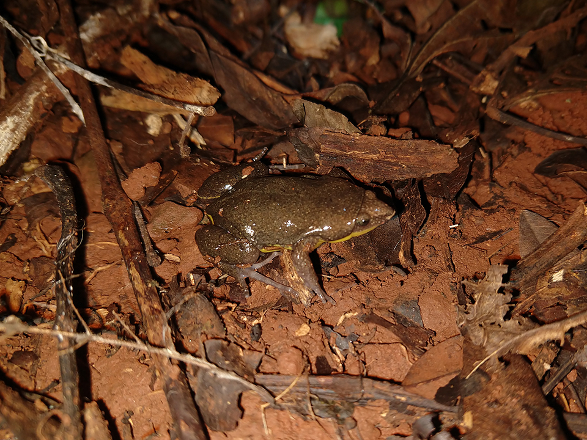
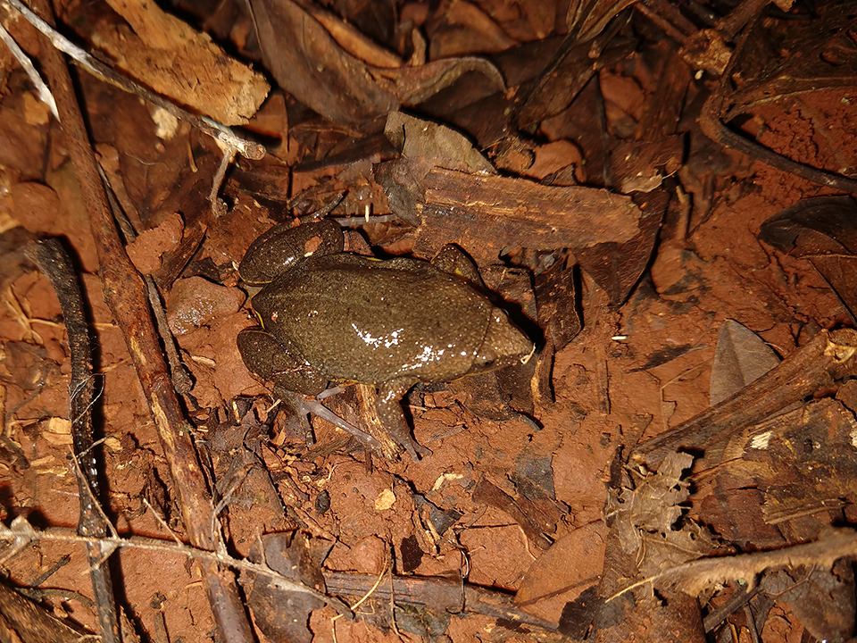

De corpo ovalado, dorso escuro e ventre amarelo, possui a cabeça pequena e o focinho estreito. É uma espécie comum, apesar de não ser facilmente encontrada. Ocorre no sul do Brasil, além do Mato Grosso do Sul e São Paulo e países vizinhos Argentina, Paraguai e Uruguai. Encontrada em maior atividade nos meses quentes e chuvosos, entre outubro e fevereiro.
Vive em grutas e tocas escavadas no chão de ambientes abertos. Alimenta-se principalmente de insetos, tais como formigas e cupins. Reproduz no período chuvoso, quando os machos vocalizam em poças permanentes ou temporárias onde os ovos são postos numa fina camada na superfície de águas rasas.
 